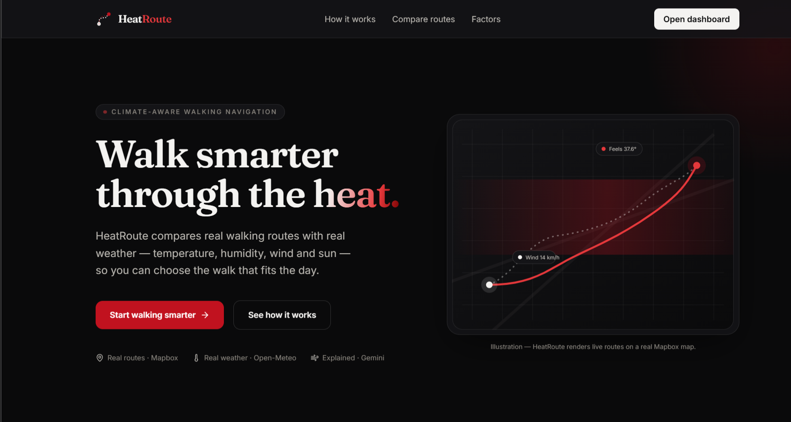
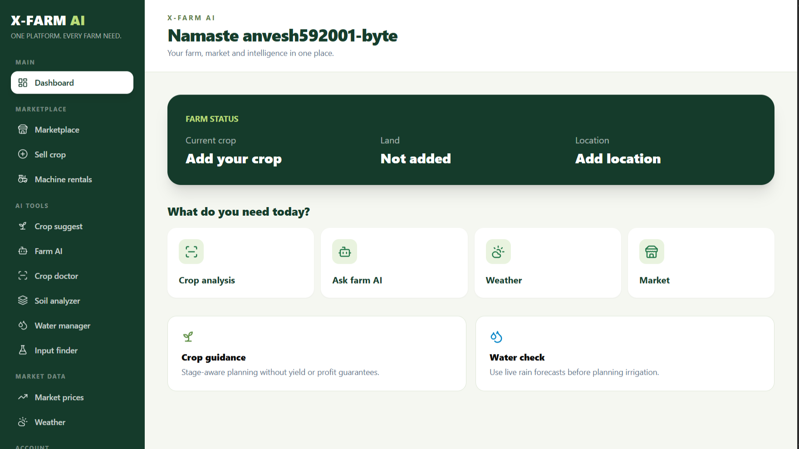
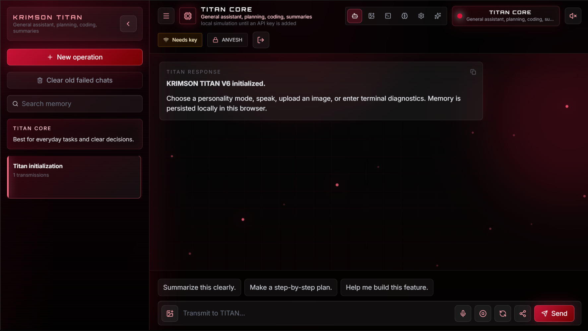

SUPPLIED PROJECT SCREENSHOT01AI × CLIMATE × WEB
HEATROUTE
An AI-assisted walking route analysis platform focused on understanding heat exposure while choosing routes.
PROJECT / HACKATHON
AI × WEB DEVELOPER
I'm Anvesh — a student developer exploring AI, web development and the space between ideas and working products.
SCROLL TO EXPLORE ↓I take ideas apart, experiment with technology, and turn what I learn into things people can actually use.

SUPPLIED PROJECT SCREENSHOTAn AI-assisted walking route analysis platform focused on understanding heat exposure while choosing routes.

SUPPLIED PROJECT SCREENSHOTAn experimental AI-powered agricultural platform exploring how environmental and crop information can become easier to understand.

SUPPLIED PROJECT SCREENSHOTAn experimental personal AI assistant concept exploring computer interaction, automation and local AI.
A flexible space for the next idea that needs to become real.
I'm Anvesh, a first-year BTech student exploring AI, software and creative technology.
I'm interested in understanding how things work, experimenting with new tools, and turning ideas into functional products.
Right now I'm focused on AI, Python, Generative AI and modern web development.
Began the next stage of my education while focusing heavily on technology and AI.
Started experimenting with Generative AI, APIs and AI-powered applications.
Started building complete web applications instead of isolated coding exercises.
Beginning to work with real businesses and build websites for clients.
Modern responsive websites for local businesses and creators.
Focused pages designed around a specific goal.
Practical AI features inside websites and digital products.
Fast experiments for ideas that need to become real.